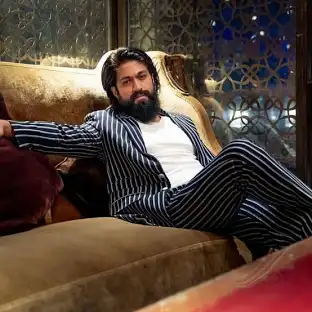

YASH
Naveen Kumar Gowda (born 8 January 1986), known by his stage name Yash,[1] is an Indian actor who predominantly works in Kannada cinema. He is a recipient of three Filmfare Awards South and two SIIMA awards.[2][3][4] Yash began his career with appearances in several television series in the 2000s. He made his film debut in 2007 with Jambada Hudugi. The 2008 romantic drama Moggina Manasu, for which he received the Filmfare Award for Best Supporting Actor, proved to be a breakthrough role for Yash.
HIS MOVIES
His first film in a leading role, Rocky (2008), was poorly received by critics and a box office flop. Yash went on to establish himself as a leading actor of Kannada cinema with the college romance Googly (2013), comedy-drama Raja Huli (2013), fantasy action Gajakesari (2014), romantic comedy Mr. and Mrs. Ramachari (2014), action comedy film Masterpiece (2015) and action romance Santhu Straight Forward (2016). The pan-India success of Prashanth Neel's period action films K.G.F: Chapter 1 (2018) and K.G.F: Chapter 2 (2022), helped Yash attain nationwide recognition. The latter ranks as the highest-grossing Kannada film.
Yash promotes various social and philanthropic causes through the Yasho Marga Foundation. He is married to the actress Radhika Pandit. Yashomarga is a charitable foundation established by him and Radhika pandit.[5]
